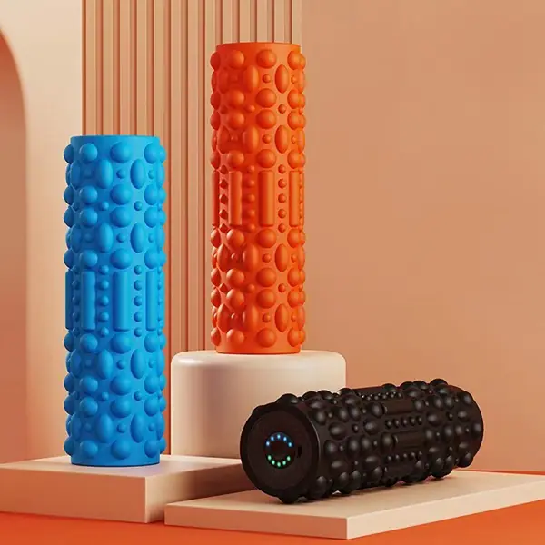

EVA また、EPP製「フォームローラー」には、ソリッド、ホロー、振動仕様のモデルに加え、ウルフトゥーステクスチャを施したモデルもご用意しています。密度、長さ、色、ロゴ、パッケージはカスタマイズ可能です。
フォームローラーの多くは EVA と EPP の2種類の素材で作られており、適した顧客層もそれぞれ異なります。EVA は密度が高く、負荷をかけたときの硬さが際立つため、理学療法士や本格的なトレーニーが深部組織へのアプローチに求める感触です。EPP はより軽く、反発が速く、繰り返し圧縮しても形状を保つため、回転の速いフィットネスジムやスタジオのまとまった発注に向いています。弊社は両素材を同じラインで生産しているため、ラインナップを決める前に2種類を並べてサンプル確認いただけます。
構造も素材と同じくらい重要です。中実タイプは深部組織への圧迫の定番です。中空コアは長さ 45 cm（18インチ）の仕様で重量と輸送費を抑えられ、輸出案件で最も多く求められるサイズでもあります。振動タイプは充電式モーターを内蔵し、リカバリー専門スタジオやスポーツチーム向けです。より硬く狙いを絞った表面を求めるお客様には、ウルフトゥースやグリッド加工をどの構造にも追加できます。弊社の EVA ローラーは 30 cm、33 cm、45 cm の3サイズ、いずれも直径 12.5 cm です。
仕様表の項目はすべて受注ごとに設定します。密度と硬さ、長さ、色、ロゴ、パッケージです。カラーは同じ出荷分のマットに合わせられるため、ラインナップが寄せ集めではなく1つのコレクションとして見えます。狙いたい密度をお知らせいただければ、その通りにサンプルを作成します。最小注文数量（MOQ）は100個、サンプル納期は約7日です。

EVA フォームローラー オオカミの歯のようなテクスチャー；45 cm（18インチ）による筋肉の回復と筋膜リリース。

深層組織マッサージやコアトレーニングに最適な、EVAのソリッドローラー。

プロ仕様の回復ケア用、充電式振動マッサージ器「フォームローラー」。

さまざまな質感やサイズ — 滑らか、グリッド、ハーフローラーのオプションに加え、色や硬さもカスタマイズ可能です。

受注生産

受注生産

EVA ・45*12.5CM / 33*12.5CM

EVA · 33cm / 45cm

EVA · 30cm / 33cm / 45cm

EVA · 33cm / 45cm

受注生産

受注生産
購買担当者から最も多く寄せられる疑問を、自社工場の視点でまとめました：
図面、希望価格、または写真をお送りください。24時間以内に見積もりとサンプル提供計画をご返信いたします。最小注文数量（MOQ）は100個からです。
お見積りをご依頼ください